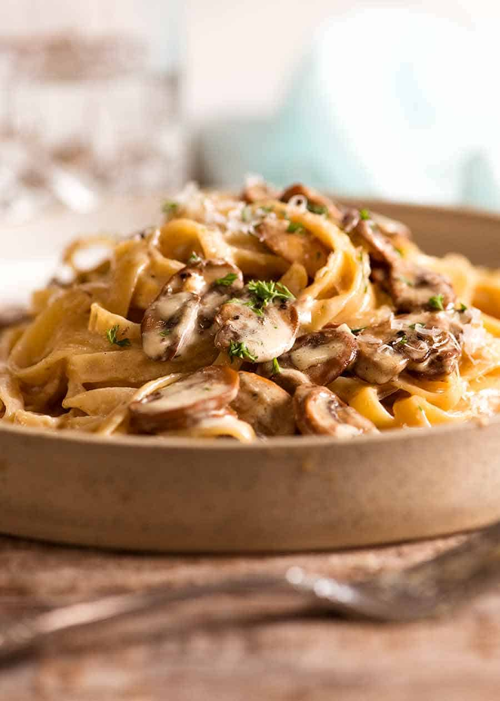
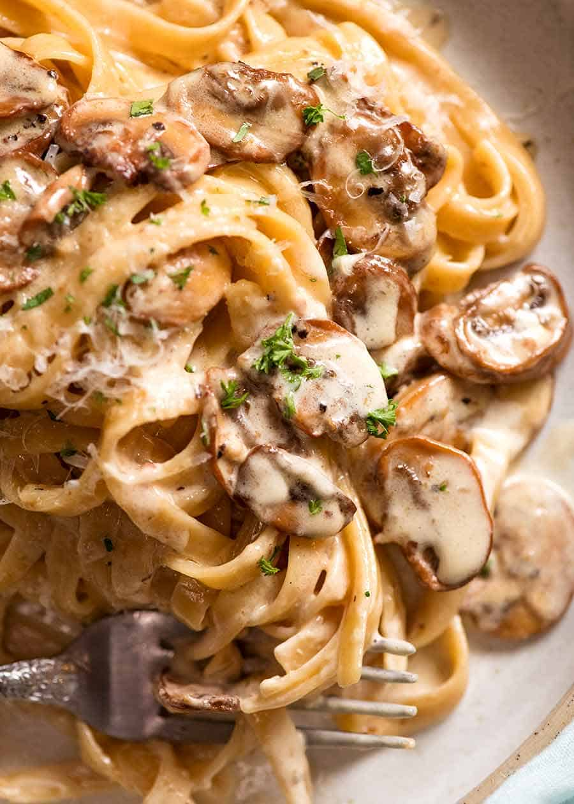

Pasta is an Italian type of food typically made from an unleavened
dough of wheat flour mixed with water or eggs,
and formed into sheets or other shapes, then cooked by boiling or baking.
This Creamy Mushroom Pasta speaks for itself. A slippery tangle of
pasta bathed in a creamy parmesan sauce loaded with buttery garlic mushrooms,
it’s simple, quick, and utterly luxurious!
 Load it up with garlicky buttery mushrooms!!!🍄🍄🍄
There’s few things in this world that can rival the feeling of satisfying a
craving for a big bowl of creamy pasta. And this one not only hits the spot,
it’s so good it’s going to have you doing the happy dance around the kitchen
(because there’s every possibility that half of it never makes your plate!).
prep: 20 mins
cook: 25 mins
Vegetarian

Ingredients
2 tbsp olive oil
1 tbsp butter
1 onion, finely chopped
250g button chestnut mushroom, sliced
1 garlic clove, finely grated
100ml dry white wine
200ml double cream
1 lemon, zest only
200g parmesan(or vegetarian alternative),
grated, plus extra to serve
300g tagliatelle or linguini
½ small bunch parsley, finely chopped
Method
Heat the oil and butter in a medium saucepan.
Fry the onion over a low heat for 10 mins or
until softened and translucent.
🧅
Add the mushrooms and cook for 10 mins over
a medium heat. Add the garlic and cook for 2 mins.
Add the wine and bring to a simmer, reduce the liquid by half.
🍄
Add the double cream and bring to a simmer,
then add the lemon zest and parmesan. Season
with salt and plenty of black pepper
🧂
Meanwhile, cook the pasta following pack instructions.
Reserve 100ml of the pasta water. Toss the pasta in the
pan with the creamy sauce and enough of the reserved water to loosen.
🍽
Stir through the parsley, divide into bowls and top with extra cheese,
if you like.
🧀